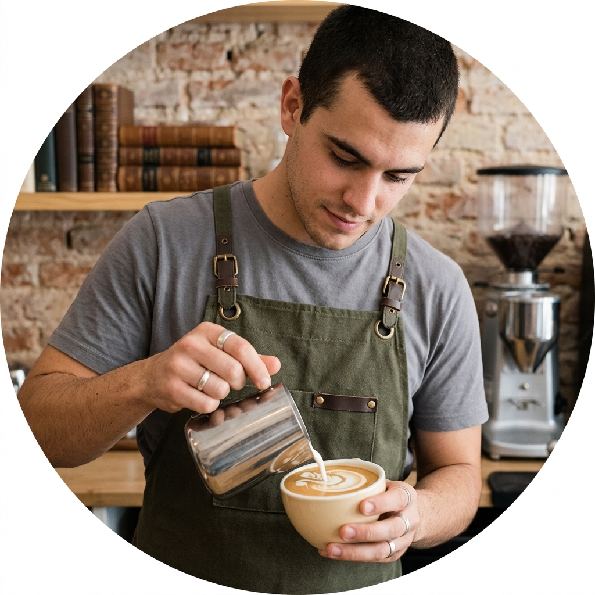
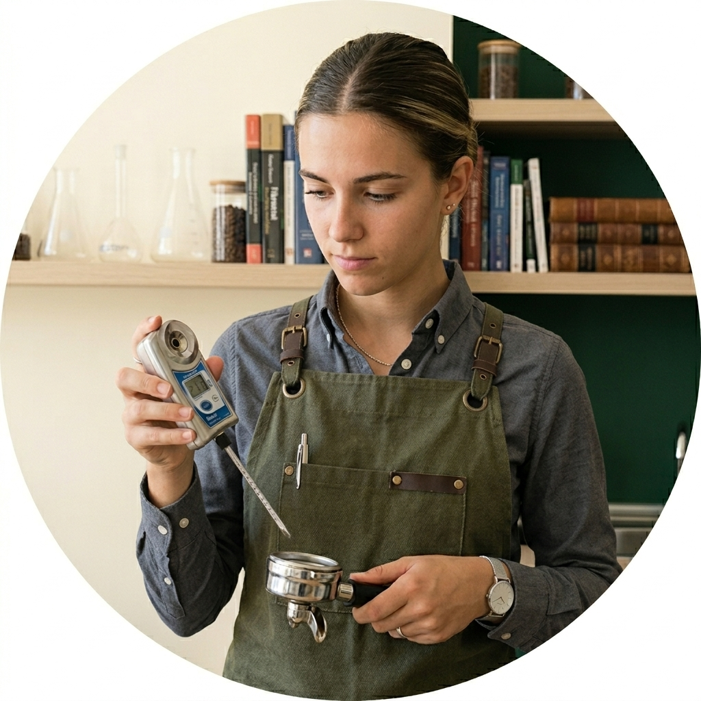
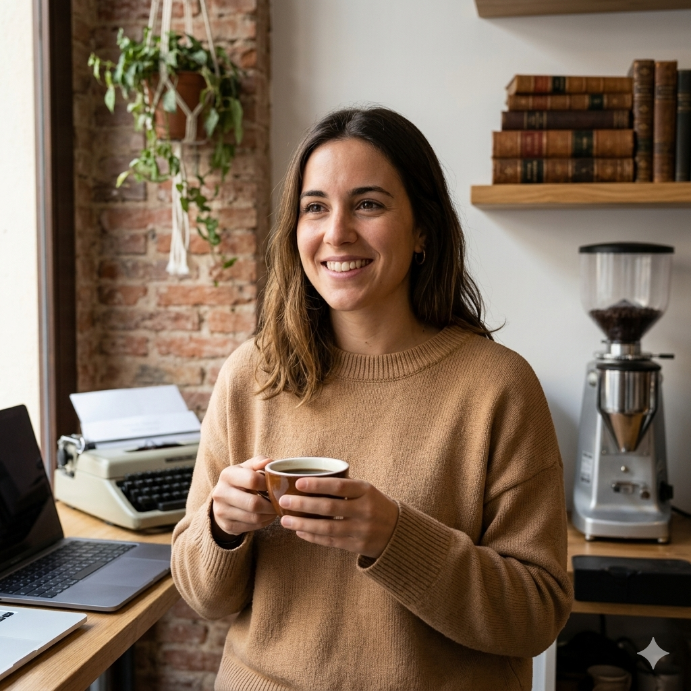

El Origen
Fundado en Málaga por estudiantes que buscaban algo más que café de máquina. Queríamos un lugar con Wi-Fi rápido, enchufes de sobra y, sobre todo, granos con trazabilidad.
Campus & Crema no nació en un plan de negocios, nació en una noche de entrega final. Entendemos que el café no es solo una bebida, es el combustible necesario para cambiar el mundo (o al menos para aprobar ese examen de las 8:00 AM).
Fundado en Málaga por estudiantes que buscaban algo más que café de máquina. Queríamos un lugar con Wi-Fi rápido, enchufes de sobra y, sobre todo, granos con trazabilidad.
Trabajamos con tostadores locales. Creemos en el comercio justo y en la precisión técnica: cada espresso se pesa y cada leche se textura a la temperatura exacta.

Capaz de hacer latte art mientras recita las leyes de la termodinámica.

Tiene un termómetro en el bolsillo y un cuaderno de catas en la mochila. Si el agua no está a 93°C, lo sabe.

La mente detrás del concepto. Convirtió su obsesión por el café en un refugio para mentes inquietas.
Trabajamos cafés de origen con tueste local para asegurar frescura y trazabilidad en cada taza.
Notas de cacao, panela y frutos rojos. Ideal para espresso equilibrado.
Perfil floral y cítrico, perfecto para filtrados y experiencias más aromáticas.
Cuerpo cremoso con matices a nuez y chocolate. Base excelente para bebidas con leche.
Cada receta está calibrada para mantener consistencia de sabor durante todo el día.
Queremos que cada visita se sienta como tu segunda casa: café, estudio y comunidad.
Priorizamos proveedores responsables y reducimos residuos con decisiones concretas.
Disponemos de opciones de leche vegetal y alternativas adaptadas. Si tienes alergias o intolerancias, avísanos y te ayudamos a elegir una opción segura para ti.
"El mejor sitio para estudiar en Teatinos. Café top y ambiente tranquilo."
"El flat white es increíble y siempre encuentro enchufe. 10/10."
"Me encanta el trato del equipo y la carta de brunch."